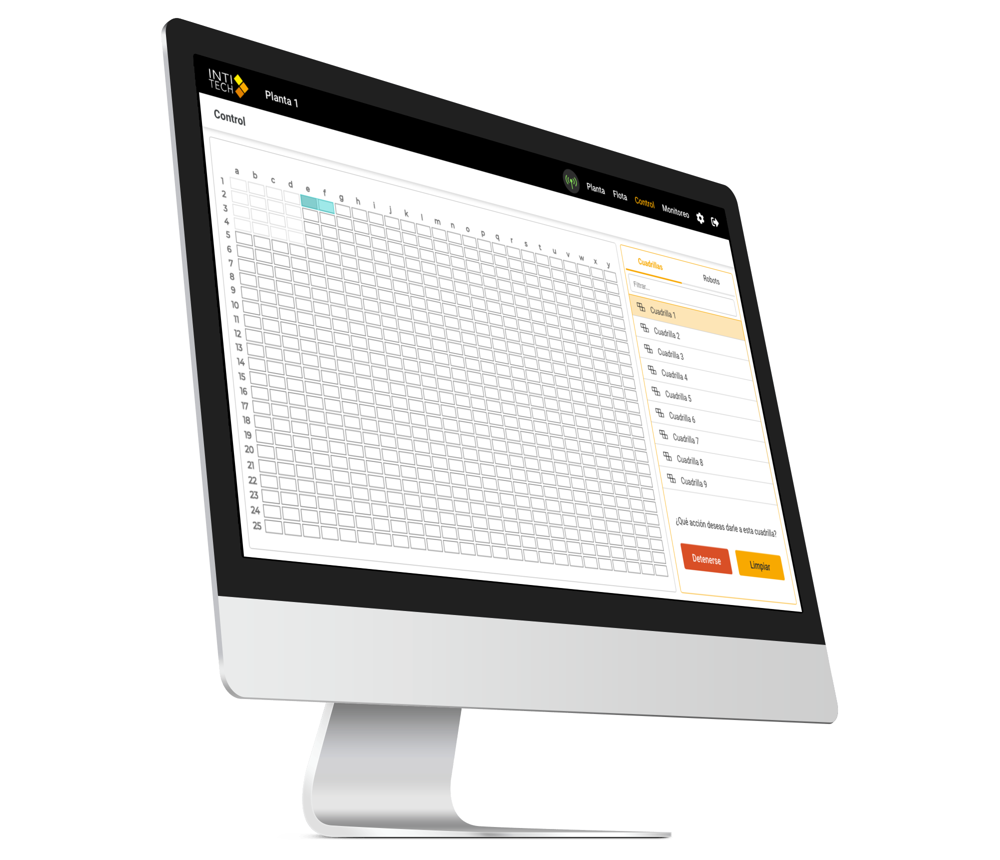
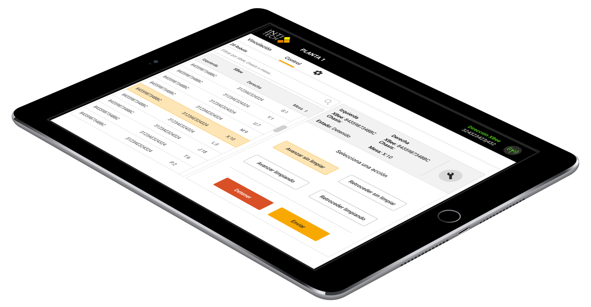
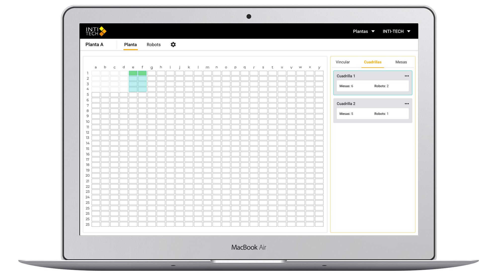

Inti-Tech es una start-up chilena que mejora la eficiencia de plantas fotovoltaicas a través de robots autónomos que limpian paneles solares. El desafío era lograr que los robots puedieran ser controlados y monitoreados de forma remota.
Para llegar a la solución fue necesario hablar con los clientes para conocer la visión del producto, luego se realizaron diversos sketch de las posibles soluciones, las cuales fueron revisadas en conjunto con el equipo de trabajo. Al ser escogida la mejor solución se realizaron wireframes de alta calidad junto con un prototipo interactivo que posteriormente fue testeado con usuarios.
Se diseñaron aplicaciones para tres tipos de plataformas: escritorio, móvil y web. La aplicación de escritorio está diseñada para controlar y monitorear a los robots, además de administrar las plantas. La aplicación móvil está enfocada en la instalación y el mantenimiento de los robots. Mientras que la web permite el monitoreo de diversas plantas fotovoltaicas desde cualquier parte del mundo.
